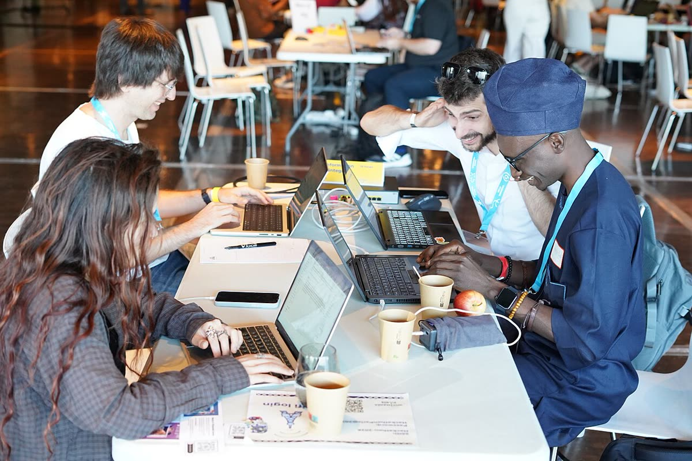

Content
- Name the length in the caption line ("in 21 seconds").
- The captions are the narration word for word.
Component · Media
A self-hosted video with a poster, captions and the browser's own controls. It never autoplays, and it falls back to the poster and a message when the file cannot play.
Used for the 21-second brochure on the marketing page (ft-video-player). The native <video controls> gives play, pause, seek, volume, captions and full screen with their built-in keyboard support. The file, poster and WebVTT captions are served from the same origin, so there is no third-party frame or tracker.
--radius-lg, --shadow-2, sunken background while the poster loads.controls, preload="none", poster, one default English captions track, an aria-label naming the video and its length.One variant: a single captioned video.
Fluid: the frame fills its column at a fixed 16:9 ratio.
When the video fires error (missing file, unsupported codec, offline), the player swaps the video for the poster image and shows a warning.

Nothing changes visually: the video already waits for Play. prefers-reduced-motion keeps it from ever autoplaying, even muted.
Full column width at every breakpoint; on phones it sits below the sign-in panel so the form comes first.
The frame border and sunken background follow the theme; the video and poster are the same in both.
<track default>, WCAG 1.2.2) and carry the whole narration; the narration describes everything shown, so no separate audio description is needed (1.2.3, 1.2.5).role="alert" and the poster image keeps its alt text.<video controls preload="none"><iframe src="youtube…">frame-src.| Part | Token |
|---|---|
| Frame radius | --radius-lg |
| Frame shadow | --shadow-2 |
| Frame border | --color-border-default |
| Frame background | --color-bg-surface-sunken |
| Caption text | --color-fg-muted |
<ft-video-player
src="/brochure/brochure.webm"
poster="/brochure/brochure-poster.jpg"
captions="/brochure/brochure.en.vtt"
label="FaithTech Community in 21 seconds"
caption="FaithTech Community in 21 seconds · captions on" />Drift noticed: none; the marketing page is the only consumer.